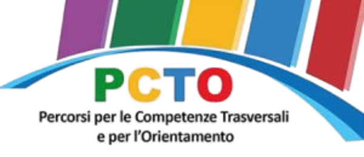
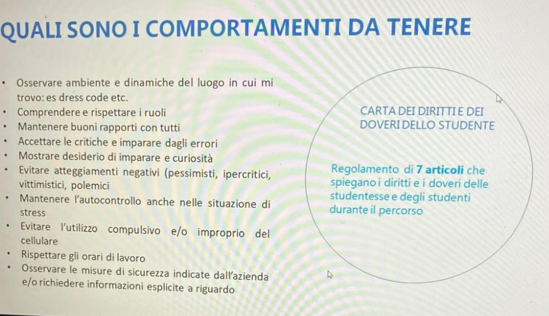
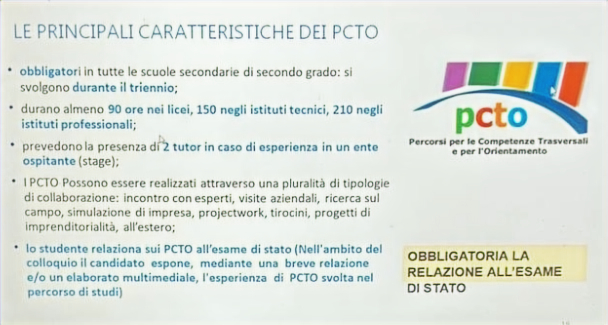
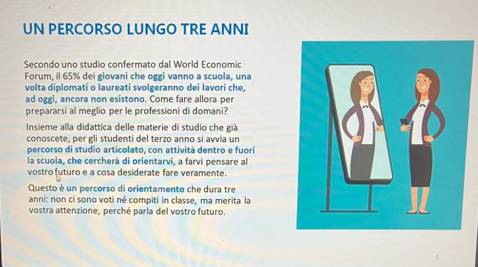
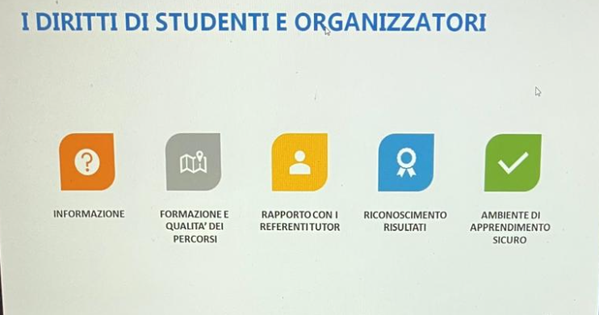
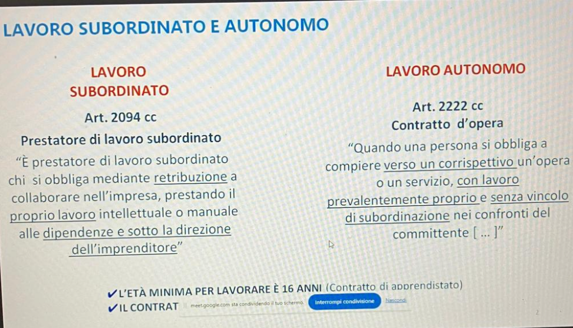
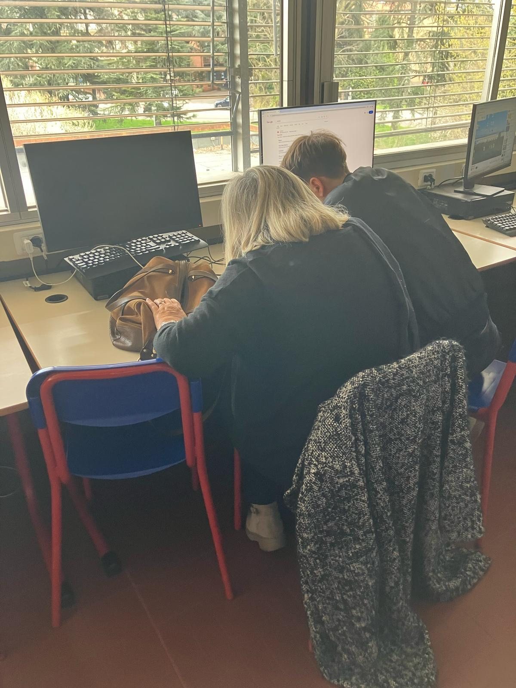
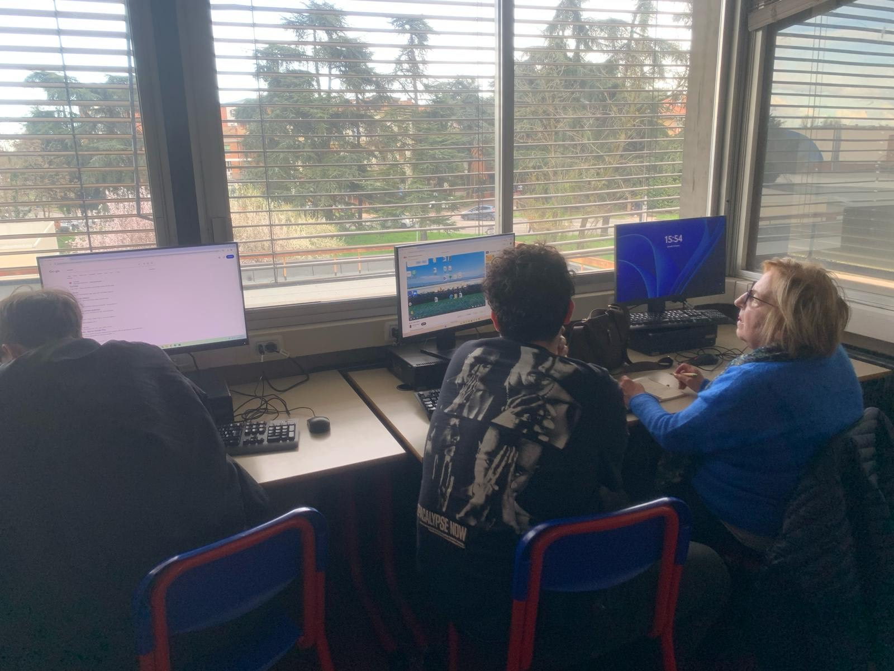

In questa pagina sono elencate e descritte le attività di PCTO relative all'anno scolastico 2024/2025.

Settembre 2024 (2h)
Aggiornamento sicurezza sul lavoro
Ripasso norme sulla sicurezza sul lavoro, introdotte già nel biennio.
Grazie a questo aggiornamento ho rafforzato le mie competenze riguardo il comportamento in sicurezza nei posti di lavoro come i laboratori.





30/10/2024 (2h)
Progetto UST: Introduzione ai PCTO.
Lezione introduttiva ai PCTO tenuta dal prof. Donato Vairo (referente PCTO presso l'Ufficio Scolastico Territoriale di Reggio Emilia).
In seguito alla lezione è stato svolto un test per verificare le competenze acquisite grazie ad essa.
Dal mio punto di vista questa lezione è stata davvero utile per comprendere lo scopo dei progetti che andrò ad affrontare nei prossimi anni.
10/03/2025 (4h)
Monta-Smonta
Attività di disassemblaggio e assemblaggio di vecchi computer, svolta sotto la supervisione dei prof. Simeone e Zanichelli.
Questo progetto mi ha fornito diverse competenze pratiche mettendomi davanti un'attività mai svolta prima d'ora.


20/02/2025 - 13/03/2025 (6h)
BUS Connect - Un ponte tra generazioni
Progetto in collaborazione con l'associazione AUSER, in cui noi studenti abbiamo prestato assistenza a degli anziani riguardo l'utilizzo di smartphone e computer.
Progetto formativo che mi ha insegnato a relazionarmi con persone di diverse generazioni.